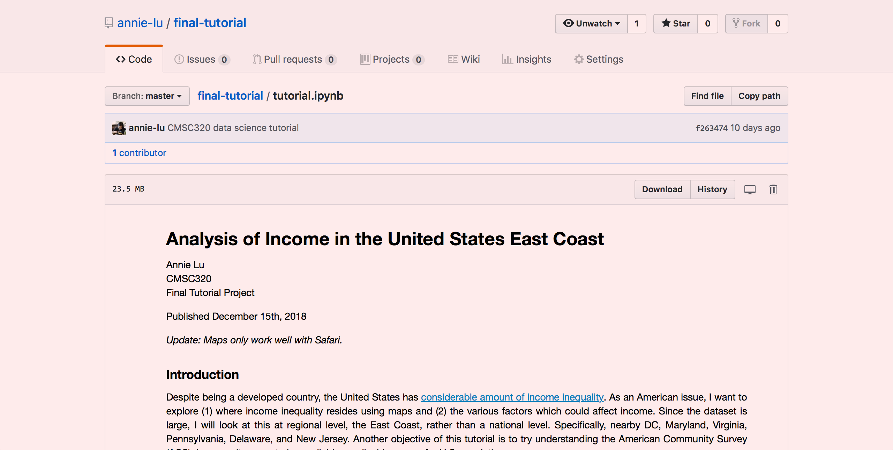

  <div class="fl w-100 w-75-l pt4-l pr7-l pb5-l pv3-m ph5-m pa3">
  <article>
    <h3 class="system sans-serif fw2">
    <a href="https://github.com/annie-lu/final-tutorial" class="db link dim tc">
    
    </a>
    <p class="f6 lh-copy measure-wide">
      <br/>
      <a href="https://github.com/annie-lu/final-tutorial" class="link black bg-animate underline hover-bg-washed-red">Data Science Final Tutorial</a>  <br/> <br/>  For my final project in CMSC320, I decided to analyze income using U.S Census Data, the American Community Survey. This was done using Python, and I go more indepth of the tools/libraries I used within the tutorial. Overall, this project ended up being a lot more challenging than expected, because I was handling (1) big data (2) weighted samples. It was a great learning process though, and I gained experience:
<br/>&nbsp; &nbsp; &nbsp; &nbsp; Extracting ACS data using IPUMS, Scraping data from websites
<br/>&nbsp; &nbsp; &nbsp; &nbsp; Using Pandas and Numpy to do basic statistics/analysis
<br/>&nbsp; &nbsp; &nbsp; &nbsp; Creating choropleth maps with Folium and GeoJSON files
<br/>&nbsp; &nbsp; &nbsp; &nbsp; Trying Seaborn libraries (used ggplot and matplotlib in the past)
</p>
   </article>
  </div>
